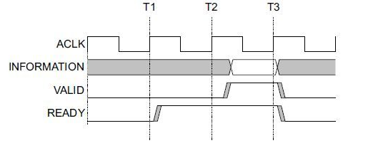

“chapter 2” ZYNQ Introduction#
The highlight of the Zynq family is the complete ARM Processing Subsystem (PS) included in the FPGA. Each Zynq family processor includes a Cortex-A9 processor, and the entire processor is built with the processor in mind. And the processor subsystem has an integrated memory controller and a large number of peripherals. Making the Cortex-A9 core in the Zynq-7000 completely independent of the programmable logic unit, that is, if the programmable logic unit part (PL) is not used for the time being, the The subsystems of the ARM processor can also work independently, which is fundamentally different from previous FPGAs, which were processor-centric.
Zynq is two major functional blocks, the PS part and the PL part. To put it bluntly, it’s the SOC part of the ARM, and the FPGA part. Of these, the PS integrates two ARM Cortex™-A9 processor, AMBA® interconnect, internal memory, external memory interface and peripherals. These peripherals mainly include USB bus interface, Ethernet interface, SD/SDIO interface, I2C bus interface, CAN bus interface, UART interface, and GPIO.

General block diagram of ZYNQ chip
PS: Processing System, which is the part of the SOC of the ARM that is not related to the FPGA.
PL: Progarmmable Logic, the FPGA part.
The PL part is the same as the 7 series, and you can see the corresponding 7 series products in the DS190 documentation. *

PS and PL interconnection technology#
ZYNQ is the first high-performance ARM device to combine Cortex-A9 series processors and high-performance FPGAs are tightly integrated within a single chip. In order to realize high-speed communication and data interaction between ARM processors and FPGAs, and to take advantage of the performance of ARM processors and FPGAs, it is necessary to design an efficient interconnection path between the on-chip high-performance processors and FPGAs. Therefore, how to design efficient PL and PS data interaction paths is one of the top priorities of ZYNQ chip design and one of the keys to the success or failure of product design. In this section, we will focus on the connection between PS and PL, so that users can understand the technology of connecting between PS and PL.
In fact, in the specific design we often do not need to do too much work in the connection of this place, after we add the IP core, the system will automatically use the AXI interface to connect our IP core with the processor, we only need to do a little bit more to add.
AXI is known as Advanced eXtensible. Interface, an interface protocol introduced by Xilinx from the 6 series of FPGAs, mainly describes how data is transferred between master and slave devices. It continues to be used in ZYNQ, the version is AXI4, so we often see AXI4.0, ZYNQ internal devices have AXI interface. In fact, AXI is ARM’s proposed AMBA (Advanced Microcontroller Bus Architecture), a high-performance, high-bandwidth, low-latency on-chip bus that was also used to replace the previous AHB and APB buses. The first version of AXI (AXI3) was included in AMBA 3.0, released in 2003, and the second version of AXI (AXI4) was included in AMBA 2010. 4.0.
The AXI protocol mainly describes how data is transferred between a master and a slave device, where a connection is established by handshaking signals between the master and the slave device. The READY signal is issued when the slave device is ready to receive data. When the master device’s data is ready, it issues and maintains the VALID signal to indicate that the data is valid. Data transmission begins only when both the VALID and READY signals are valid. When both signals remain valid, the master device continues to transmit the next data. The master device can revoke the VALID signal or the slave device can revoke the READY signal to terminate the transmission.The protocol of AXI is shown in the figure.At T2, the READY signal of the slave device is valid, and at T3 the VILID signal of the master device is valid, and the data transmission starts.
AXI Handshake Timing Diagram
In ZYNQ, AXI-Lite, AXI4 and AXI-Stream are supported. Table 5-1 shows the characteristics of these three AXI interfaces.
Interface Protocols |
Characteristics |
Applications |
|---|---|---|
AXI4-Lite |
Address/Single Data Transfer |
Low-Speed Peripheral or Control |
AXI4 |
Address/Burst Data Transmission |
Bulk Transfer of Addresses |
AXI4-Stream |
Data Only Transmission, Burst Transmission |
Data Stream and Media Stream Transmission |
AXI4-Lite:
With lightweight, simple structure, suitable for small batch data, simple control occasions. It does not support bulk transfer, and can only read and write one word (32bit) at a time when reading and writing. Mainly used for accessing some low-speed peripherals and peripheral control.
AXI4:
The interface is almost the same as AXI-Lite, but with the addition of a feature called bulk transfer, which allows you to read and write to a piece of address at once in a row. This means that it has a burst function for reading and writing data.
The above two are using memory mapping control, that is, ARM will be user-defined IP programmed into a certain address for access, read and write as in reading and writing their own on-chip RAM, programming is also very convenient, less difficult to develop. The price is that the resource consumption is too much, need to read the address line, write the address line, read the data line, write the data line, write the answer line of these signal lines.
AXI4-Stream:
This is a continuous streaming interface that does not require an address line (much like a FIFO, just read all the time or write all the time). For this type of IP, ARM can not be controlled by the above memory mapping (FIFO does not have the concept of address at all), there must be a conversion device, such as the AXI-DMA module to achieve the conversion of memory mapping to streaming interfaces.AXI-Stream applies to a number of occasions: video streaming processing; communication protocols, conversion; digital signal processing; wireless communications and so on. The essence of all of them is the data path constructed for the numerical stream, which constructs a continuous data stream from the source (e.g. ARM memory, DMA, wireless receiving front-end, etc.) to the host (e.g. HDMI display, high-speed AD audio output, etc.). This interface is suitable for real-time signal processing.
The AXI4 and AXI4-Lite interfaces contain 5 different channels:
Read Address Channel
Write Address Channel
Read Data Channel
Write Data Channel
Write Response Channel
Each of these channels is a separate AXI handshake protocol. The following two figures show the read and write models respectively:

AXI Read Data Channel

AXI Write Data Channel
The AXI bus protocol is implemented in hardware inside the ZYNQ chip, including 9 physical interfaces, which are AXI-GP0~AXI-GP3, AXI-HP0~AXI-HP3, and AXI-ACP interface.
AXI_ACP interface, is a kind of interface defined under ARM multi-core architecture, translated as Accelerator Coherence Port in Chinese, is used to manage DMA and other AXI peripherals without cache, and the PS side is a Slave interface.
The AXI_HP interfaces, which are high performance/bandwidth AXI 3.0 standard interfaces, are four in total, and the PL module is connected as a master device. Mainly used for PL access to the memory on the PS (DDR and On-Chip) RAM)
The AXI_GP interfaces, which are general-purpose AXI interfaces, are four in total, including two 32-bit master device interfaces and two 32-bit slave device interfaces.

As you can see, only two AXI-GPs are Master Ports, i.e., host interfaces, and the remaining seven ports are Slave Port (Slave Interface). The host interface has the authority to initiate reads and writes, and the ARM can use the two AXI-GP host interfaces to actively access the PL logic, which actually maps the PL to an address, and reads and writes to the PL registers as if it were reading and writing to its own memory. The rest of the slave interface is a passive interface, accepting reads and writes from the PL, against the grain.
In addition, the performance of these nine AXI interfaces is different. the GP interface is a 32-bit low-performance interface with a theoretical bandwidth of 600 MB/s, while the HP and ACP interfaces are 64-bit high-performance interfaces with a theoretical bandwidth of 1,200 MB/s. One may ask why the high-performance interfaces are not made into host interfaces. This can be initiated by the ARM high-speed data transfer. The answer is that the high-performance interface does not need ARM. The CPU takes care of the data moving, the real mover is the DMA controller located in the PL.
The ARM on the PS side has direct hardware support for the AXI interface, while the PL needs to use logic to implement the corresponding AXI protocol. xilinx provides off-the-shelf IPs such as AXI-DMA, AXI-GPIO, AXI-Dataover, etc. in the Vivado development environment. AXI-Stream implements the corresponding interfaces, which can be added directly from the IP list of Vivado to realize the corresponding functions. The following figure shows the various DMAs under Vivado. IP:

The following is a description of the functions of several commonly used AXI interface IPs:
AXI-DMA: Realization of conversion from PS memory to PL high-speed transfer high speed channel AXI-HP <—-> AXI-Stream
AXI-FIFO-MM2S: Realization of the conversion from PS memory to PL general-purpose transport channel AXI-GP <—–> AXI-Stream
AXI-Datamover: implements the conversion from PS memory to the PL high-speed transfer high speed channel AXI-HP <—-> AXI-Stream, except that this time it is completely controlled by the PL and the PS is completely passive.
AXI-VDMA: Realizes the conversion from PS memory to PL high-speed transmission high speed channel AXI-HP <—-> AXI-Stream, except that it is specialized for two-dimensional data such as video and image.
AXI-CDMA: This is done by the PL to move data from one location in memory to another without the need for the CPU to intervene.
Examples of how to use these IPs will be given in later chapters. Sometimes, users need to develop their own IPs to communicate with the PS, which can be generated using the wizard. user-defined IP cores can have interfaces such as AXI4-Lite, AXI4, AXI-Stream, PLB and FSL. The latter two are not used as they are not supported on the ARM side.
With these official IPs above and the custom IPs generated by the wizard, users don’t really need to know too much about AXI timing (unless they do encounter problems) because Xilinx has encapsulated all the details related to AXI timing, and users only need to focus on their own logic implementation.
The AXI protocol is strictly a point-to-point master-slave interface protocol, and when multiple peripherals need to interact with each other’s data, we need to join an AXI The Interconnect module, or AXI Interconnect Matrix, serves to provide a switching mechanism (somewhat similar to the switching matrix inside a switch) for connecting one or more AXI master devices to one or more AXI slave devices.
This AXI Interconnect The IP core can support up to 16 master devices and 16 slave devices. If more interfaces are needed, several more IP cores can be added.
The AXI Interconnect basic connection modes are the following:
N-to-1 Interconnect
to-N Interconnect
N-to-M Interconnect (Crossbar Mode)
N-to-M Interconnect (Shared Access Mode)

many-to-one situation

One-to-many scenarios

Many-to-many read and write address channels

Many-to-many read and write data channels
ZYNQ internal AXI interface devices are interconnected by means of an interconnect matrix, which ensures both the high efficiency of the data transmission and the flexibility of the connection. xilinx provides the IP core axi_interconnect to realize such an interconnect matrix in Vivado, and we just need to call it.

AXI Interconnect IP
Introduction to the ZYNQ chip development process#
Since ZYNQ integrates CPU and FPGA together, developers need to design both the ARM operating system application program and device drivers, and the hardware logic design of the FPGA part. In the development, it is necessary to understand the Linux operating system, the architecture of the system, and also need to build a hardware design platform between the FPGA and ARM system. Therefore, the development of ZYNQ requires both software and hardware personnel to collaborate on the design and development. This is the so-called “hardware and software co-design” in ZYNQ development.
The design and development of the hardware and software systems of the ZYNQ system requires the use of the following development environments and debugging tools: Xilinx Vivado.
The Vivado design suite implements the design and development of the FPGA part of the FPGA, pin and timing constraints, compilation and simulation, and implements the RTL to bitstream design flow.Vivado is not a simple upgrade of the ISE design suite, but a completely new design suite. It replaces all the important tools of the ISE design suite, such as Project Navigator, Xilinx Synthesis Technology, Implementation, CORE Generator, Constraint, Simulator, Chipscope Analyzer, FPGA Editors and other design tools.
Xilinx Vitis (Software Development Kit). Vitis is the Xilinx Software Development Kit (Vitis), based on the Vivado hardware system, which automatically configures important parameters, including tool and library paths, compiler options, JTAG and flash settings, debugger connectivity, and the Bare Metal Board Support Package (BSP). Drivers are provided for the IP hardcore.Vitis supports co-debugging of the IP hardcore (on the FPGA) and the processor software, so that we can use high-level C or C++ to develop and debug ARM and FPGA systems, and test whether the hardware system is working correctly.The Vitis software also comes with the Vivado software and does not need to be installed separately.
The development of ZYNQ is also a hardware first and then software approach. The specific process is as follows:
Create a new project on Vivado and add an embedded source file.
Add and configure the basic peripherals of the PS and PL sections in Vivado, or need to add customized peripherals.
Generate top level HDL file in Vivado and add constraints file. Then compile to generate the bitstream file (XX.bit).
Export the hardware information to Vitis software development environment, in Vitis environment you can write some debugging software to verify the hardware and software, combined with the bitstream file to debug the ZYNQ system alone.
Generate FSBL file in Vitis.
Generate u-boot.elf, bootloader image in VMware virtual machine.
In Vitis, through the FSBL file. The bitstream file system.bit and the u-boot.elf file generate a BOOT.bin file.
Generate Ubuntu kernel image file Zimage and Ubuntu root filesystem in VMware. Also need to write drivers for the FPGA custom IP.
Put the BOOT, kernel, device tree, and root filesystem files into the SD card, power on the development board, and the Linux OS will boot from the SD card.
The above is a typical ZYNQ development process, but ZYNQ can also be used as a separate ARM, so that there is no need to relate to the PL side of the resources, and the traditional ARM development is not very different. ZYNQ can also be used only the PL part, but the configuration of the PL is still to be done by the PS, that is, it is not possible to use the traditional way of curing Flash as long as the firmware of the PL is cured up.
What skills to have to learn ZYNQ#
Learning ZYNQ is more demanding than learning traditional tool development such as FPGA, MCU, ARM, etc. Trying to learn ZYNQ is not a quick fix.
software developer#
Principles of Computer Composition
C, C++
Computer operating systems
tcl script
Good foundation in English reading
Logic Developer#
Principles of Computer Composition
C language
Fundamentals of digital circuits
Verilog, VHDL languages
Good foundation in English reading
ZYNQ-7000 Development platform FPGA tutorial - Alinx official website